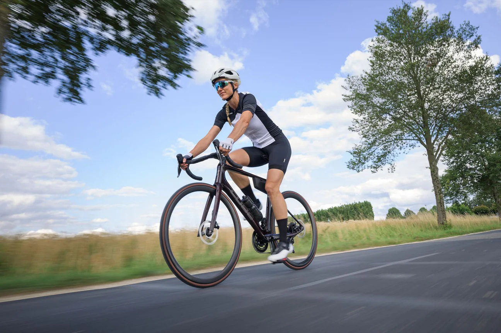

<body>
    <header>
        <h2>Titel van de site</h2>
        <nav>
            <ul>
                <li><a href="index.html">Home</a></li>
                <li><a href="over-mij.html">Over mij</a></li>
                <li><a href="hobby.html">Hobby</a></li>
                <li><a href="boodschappen.html">Boodschappen</a></li>
            </ul>
        </nav>
    </header>
    <main>
        <h3>Fietsen</h3>
        <p>Fietsen is leuk, bla bla bla en nog zo veel meer.</p>
        
        <!-- unieke content van deze pagina -->
        <a href="https://sporza.be/nl/categorie/wielrennen/">Meer informatica over wielrennen</a> 
    </main>
    <footer>
        <p>Zaina El Kordy</p>
    </footer>
</body>